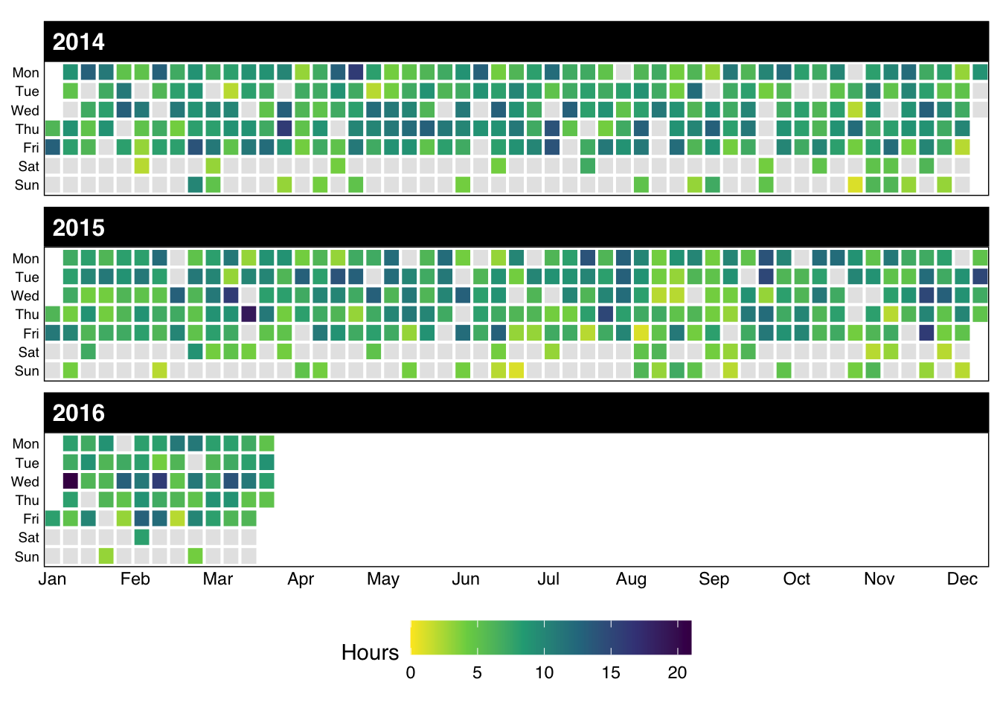

![]()
library(knitr)
library(tidyverse)In this post, I’ll show how to create GitHub style “waffle” plot in R with the ggplot2 plotting package. We’ll use these packages
Simulate activity data
First, I’ll create a data frame for the simulated data, initializing the data types:
d <- tibble(
date = as.Date(1:813, origin = "2014-01-01"),
year = format(date, "%Y"),
week = as.integer(format(date, "%W")) + 1, # Week starts at 1
day = factor(
weekdays(date, T),
levels = rev(c(
"Mon",
"Tue",
"Wed",
"Thu",
"Fri",
"Sat",
"Sun"
))
),
hours = 0
)And then simulate hours worked for each date. I’ll simulate hours worked separately for weekends and weekdays to make the resulting data a little more realistic, and also simulate missing values to data (that is, days when no work occurred).
set.seed(1)
# Simulate weekends
weekends <- filter(d, grepl("S(at|un)", day))
# Hours worked are (might be) poisson distributed
weekends$hours <- rpois(nrow(weekends), lambda = 4)
# Simulate missing days with probability .7
weekends$na <- rbinom(nrow(weekends), 1, 0.7)
weekends$hours <- ifelse(weekends$na, NA, weekends$hours)
# Simulate weekdays
weekdays <- filter(d, !grepl("S(at|un)", day))
weekdays$hours <- rpois(nrow(weekdays), lambda = 8) # Greater lambda
weekdays$na <- rbinom(nrow(weekdays), 1, 0.1) # Smaller p(missing)
weekdays$hours <- ifelse(weekdays$na, NA, weekdays$hours)
# Concatenate weekends and weekdays and arrange by date
d <- bind_rows(weekends, weekdays) %>%
arrange(date) %>% # Arrange by date
select(-na) # Remove na columnWaffle-plot function
Then I’ll create a function that draws the waffle plot. If you have similarly structured data, you can copy-paste the function and use it on your data.
gh_waffle <- function(data, pal = "D", dir = -1) {
p <- ggplot(data, aes(x = week, y = day, fill = hours)) +
scale_fill_viridis_c(
name = "Hours",
option = pal, # Variable color palette
direction = dir, # Variable color direction
na.value = "grey90",
limits = c(0, max(data$hours))
) +
geom_tile(color = "white", size = 0.7) +
facet_wrap("year", ncol = 1) +
scale_x_continuous(
expand = c(0, 0),
breaks = seq(1, 52, length = 12),
labels = c(
"Jan",
"Feb",
"Mar",
"Apr",
"May",
"Jun",
"Jul",
"Aug",
"Sep",
"Oct",
"Nov",
"Dec"
)
) +
theme_linedraw(base_family = "Helvetica") +
theme(
axis.title = element_blank(),
axis.ticks = element_blank(),
axis.text.y = element_text(size = 7),
panel.grid = element_blank(),
legend.position = "bottom",
aspect.ratio = 1 / 7,
legend.key.width = unit(1, "cm"),
strip.text = element_text(hjust = 0.00, face = "bold", size = 12)
)
print(p)
}Using the waffle plot function
gh_waffle() takes three arguments, the first, data is a data frame with columns date (type: Date), year (number or character), week (number), day (an ordered factor to make days run from top to bottom on the graph), and hours (number). The second option to gh_waffle(), pal specifies one of four color palettes used by the viridis color scale, and can be "A", "B", "C", or "D". The default is “D”, which is also what GitHub uses (or something similar at least). The last option, dir specifies the direction of the color scale, and can be either -1 or 1. The GitHub default is -1.
Using gh_waffle() with the default settings, only providing the data frame d, gives the following result:
gh_waffle(d)Warning: Using `size` aesthetic for lines was deprecated in ggplot2 3.4.0.
ℹ Please use `linewidth` instead.
Further reading
- Faceted heatmaps with ggplot2 (Inspiration for this post.)
- dplyr
- ggplot2
- viridis
- ggthemes
Reuse
Citation
BibTeX citation:
@online{vuorre2016,
author = {Vuorre, Matti},
title = {GitHub-Style Waffle Plots in {R}},
date = {2016-03-24},
url = {https://vuorre.com/posts/github-waffle-plot/},
langid = {en}
}
For attribution, please cite this work as:
Vuorre, Matti. 2016. “GitHub-Style Waffle Plots in R.”
March 24, 2016. https://vuorre.com/posts/github-waffle-plot/.